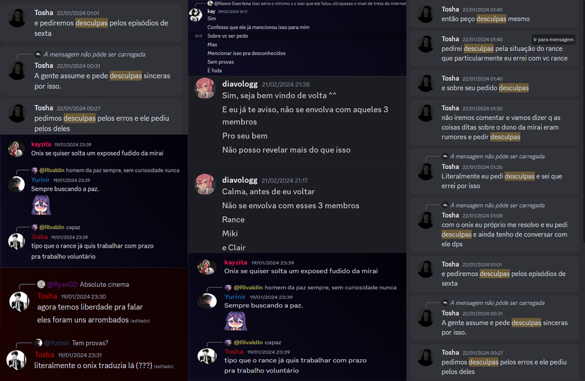
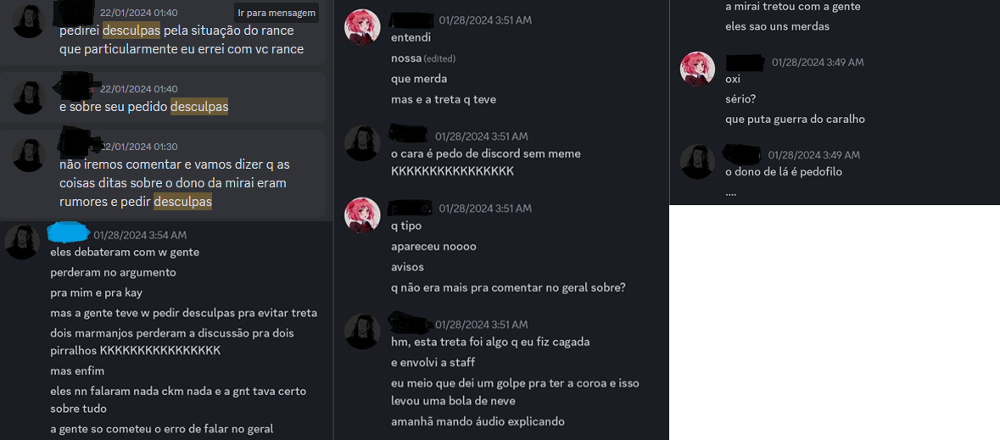

Opa pessoal, Miki aqui.
Infelizmente meu primeiro projeto onde tinha em vista continuar com as traduções de DDLC fracassou, por mais que esteja na ativa as coisas já fugiram e muito do controle, as pessoas que deixei a frente do projeto, no meio do caminho tiveram seus imprevistos e traições, mas pelo novo "inicio" deles pressionando uma das responsáveis por ela ter seus problemas e não tá 24 horas presente, quanto ao outro apenas deixar o esgoto ir se espalhando e colocando um terceiro no comando, chutando a principal do projeto e ele assumido, e transformando o servidor em um lugar esquisito e podre nnde ao mesmo tempo que queria torna-lo infantil, criava um habiante onde tudo bem mensagens com teor sexual, desde que tivesse marcado como spoiler, como se qualquer um não pudesse clicar e ler, apesar dessas red frags estranhas, apenas deixei de lado após todo ocorrido, até que chegamos no ponto onde o grupinho se junto para espalhar mentiras e imputar crimes tanto a mim quanto e a o Rance, inacreditavelmente sobre coisas absurdas e pesadas, o próprio ex-dono lá espalhava no privado da equipe onde boa parte foi conivente com a podridão só chegando ao meu conhecimento por um membro da equipe que queria entender a fundo o que aconteceu, apesar que no caminho houveram tentativas de resolver ambos o lado se entenderem foi da boca pra fora e continuaram a propragar mentiras, tantas que criticaram o principal lider deles atualmente, por falar nele, era o segundo no comando, no qual confiei e apenas apoiou tudo que aconteceu, mesmo que o seu grande amigo e escolhido para ajuda-lo, seja um crimonoso de caráter horrível, o mesmo decidiu deixar seu lado neutro e apoia-lo, até ser pressionado e ter que bani-lo, afinal era bem grave Mas independente que esse lider tenha sido expulso por assim dizer, nada mudou essencialmente lá, meio que a staff que restou pensa igual, inclusive o Onix, que até então consideramos um amigo quem iria imaginar que no fim só iria ser omisso diante a tudo, com exeção de ter nos banidios injustamente de lá, tanto que não há logs, não há mensagens de saída, apenas foi ocultado e ignoram se perguntam sem justificativa algum o mesmo se manter calado diante disso, sendo apenas um pai ausente daquele servidor pela metade, abaixo um compilado dessa treta.
E sobre mais uma coisa em si, já que vale a citação, já pela equipe ser conivente com a situação merda que envolveu nossa equipe e a seria acusação falsa já que o mesmo que na era atual dono e manda e desmanda no servidor, compartilhava mentiras sérias no privado do demais colegas de equipe, uma delas sendo a tal acusação de pedofilia, que no fim das contas serviu para sua retirada da equipe, pelo menos foi isso que passaram para a gente, lembrando que isso seria após a tentiva de resolver a situação chata das mentiras espalhadas, a primeiro momento tinha tudo se resolvido, porém o dono, pelo seu ego ferido enorme, não ficou feliz com o resultado já que é o mesmo fez questão de me acusar falsamente de algo, da maneira mais idiota que já vi na vida, então para garantir que ninguém iria mais interagir mais com a gente???? Eu sei, é idiota mas não esperava muito de alguém como ele, só deixando claro que até onde sabemos o mesmo foi convidado a se retirar, sim da maneira mais educada do mundo afinal, amizade é passar pano né, Onix porém no fim das contas foi recusado qualquer ajuda ou desbanir a gente, sendo que nunca fizemos nada lá, além de conversar sobre politica, talvez seja demais pra gente que conversa todo esquisito então por isso nosso mods foram retirados daquele servidor meia boca, diante que a equipe se manter firme e forte em nos ofender, por motivo nenhum, apenas a dores que seu malvado favorito foi embora Com isso não tenho muito a dizer, provas abaixo.
O motivo de ter organizado e feito esse daqui é para aproveitar o nossas antigas traduções, infelizmente não são todos, pois queremos distância daquele do antigo tradutor da nossa equipe tendo isso em vista, jamais usaria conteúdo que não são meus, diferentes de certas pessoas, então aqui será armazenado a traduções da Mirai Translations, que atualmente estamos seguindo o rumo mais amplo para demais jogos, afinal, variedade é algo que todos queremos e precisamos, jogar apenas um jogo em repetidas fórmulas, só é divertido algumas vezes, por isso quero ter um memorial para o meu projeto que após esse pequeno fracasso em meses, encerro por enquanto, não tenho a menor vontade de continuar alguns projetos, mesmo que eles estejam quase concluídos, apenas aqueles que já dei minha palavra, então provavelmente venha pra cá só não criem expectativas, apenas tentaria novamente com o projeto caso algo muito incrível entre os mods surgesse ou algum tradutor queira seguir por esse caminho, darei total apoio então caso queira me procurar, recomendo no discord procura por mikimwk, lá trato melhor os detalhes, porém por enquanto me despeço do meu pequeno projeto, foi bom enquanto durou Doki Doki Translate Club
Vamos lá, agora é minha vez de falar
A princípio nem queria falar, pois neh chato demais
Independente de tudo que aconteceu
Tomei a liberdade de falar mesmo assim
O motivo principal que me fez querer falar sobre isso é que por
Mais que tenha sido cansativo pra todos somos
Adultos o suficiente para não desejar o mal independente da
Razão que tenha sido a treta
No fundo, todo mundo ficou triste pois
O objetivo final é todos serem Unidos porém a
Coisa densadou de maneira desigual, éramos pra ser
Unidos porém devido a essa treta
OOs servidores acabou se parando mas
Na vida amizades vem e vão
Independente da época do ano se quiserem conversar me adicionem no
X. -Rance
Só deu vontade de adicionar aqui, em homenagem a essa querida equipe que traduz com chat GPT